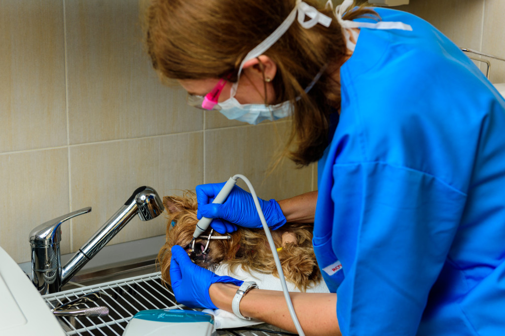

Грижата за зъбите на домашните любимци често е пренебрегвана през първите 1-2 години и стопаните се сещат за тази тема когато вече се появи проблем или животното им има лош дъх. Тогава обаче често се касае за хронично натрупване на зъбен камък и се налага пациента да бъде упоен за да се изчистят зъбите му и да бъдат отстранени или лекувани най-засегнатите.
При една добра и навременна профилактика тези процеси могат да бъдат значително забавени.
Първата важна стъпка е да научите домашния си любимец да яде гранулирана храна. Така се стимулира дъвкателната мускулатура и чрез раздробяването на твърдите гранули се постига частично почистване на зъбите. Имайте предвид, че повечето животни предпочитат консервирана храна или пастети, но със сигурност ще намерите и гранули, които да бъдат добре приети.
С повече упорство от ваша страна можете да приучите вашия домашен любимец към иначе не много приятната процедура на миене на зъби. За целта ще си набавите специална четка за зъби в подходящ за породата размер и паста за зъби за животни. Подчертавам, че се касае за специфични зоомагазинни продукти, като пастата обикновено е с вкус на пилешко месо или черен дроб и не съдържа флуор или избелващи вещества (за разлика от тези, предназначени за хора). Алтернатива на пастата е гелът за зъби, който може да се използва без четка и се нанася направо върху зъбите и венците посредством специалния накрайник на тубичката.
Има и други интересни продукти, отнасящи се до зъбната хигиена на домашните любимци: такива са специалните разтвори за уста, които се прибавят към водата за пиене, както и играчките-въжета напоени с мента, които освен че помагат за почистването на зъбите, освежават и дъха.
Накрая ще спомена, че някои от фирмите предлагат храни за кучета и котки, които съдържат специфични съставки, намаляващи натрупването на зъбна плака.